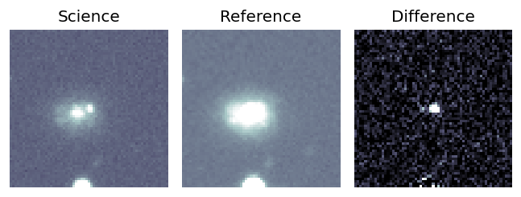
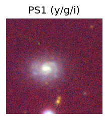
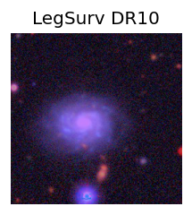
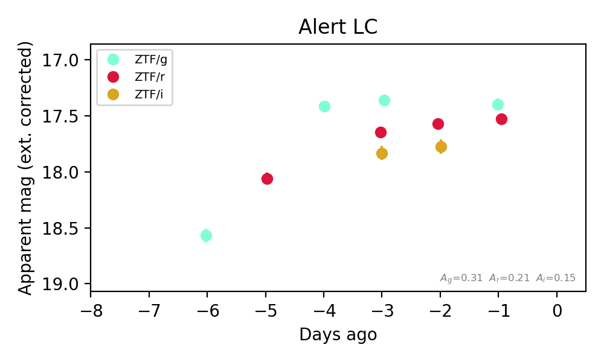
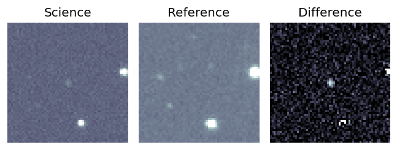
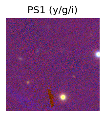
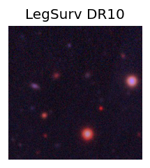
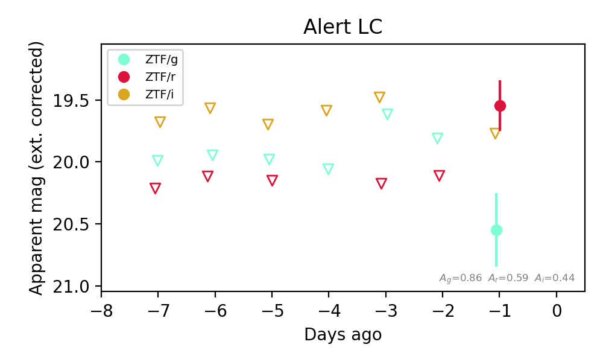

Candidate List 20260921Last night — ZTF: 273 passed basic cuts (33 young) · LSST: 0 passed basic cuts (0 young)Previous Day Next Day
Section 1: New Sources (age<1d) Section 2: Old (1-5d) sources observed last nightplaceholder
Section 2: Older Sources Observed Last Night (2)
0. [ZTF] ZTF26abvcyoo (FBOT?) [Back to Top] [Share] [Trigger Swift] [Fritz Alert] [Fritz Source] [Lasair]RA, Dec: 73.08491, 5.15068 4h52m20.38s, 5d 9m2.44sGalactic (l, b): 193.47362, -23.53051 ext(g-r) = 0.098


TESS: Sectors [ 5 32 98 110]
NED host (10 arcsec):Found CGCG 420-010 (G, 5.4″); NED spec-z: z=0.0298 [zflag S1L]; peak abs mag = -18.29
PS1: 0 sources in 3 arcsec
LegacySurvey: 1 sources in 3 arcsec Closest: d = 1.55 arcsec, 41.2 deg (east of north) photoz=0.08 (68% bounds 0.06, 0.12), type=SER peak abs mag (ext. corrected) = -20.5 (68% bounds -19.86, -21.37)

Extinction-corrected gr color:
From alerts: -0.13 +/- 0.07 mag
Extinction-corrected gi color:
From alerts: -0.47 +/- 0.07 mag
Extinction-corrected ri color:
From alerts: -0.2 +/- 0.08 mag
Rise Rate:
g: 0.98 mag/day
r: 0.39 mag/day
i: 0.29 mag/day
Fade Rate:
1. [ZTF] ZTF26abwpguv (Afterglow?) [Back to Top] [Share] [Trigger Swift] [Fritz Alert] [Fritz Source] [Lasair]RA, Dec: 37.01532, 18.20984 2h28m3.68s, 18d12m35.43sGalactic (l, b): 152.93021, -38.96855 WARNING: 3.4 deg from ecliptic plane ext(g-r) = 0.277


TESS: Sectors [42 43 70 71]
PS1: 0 sources in 3 arcsec
LegacySurvey: 0 sources in 3 arcsec

Extinction-corrected gr color:
From alerts: 1.0 +/- 0.36 mag
Extinction-corrected gi color:
From alerts: 0.78 +/- 99 mag
Extinction-corrected ri color:
From alerts: -0.22 +/- 99 mag
Consistent with synchrotron, g-r>0!
Rise Rate:
r: 0.53 mag/day
Fade Rate: